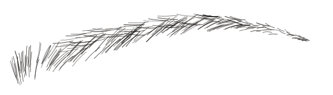
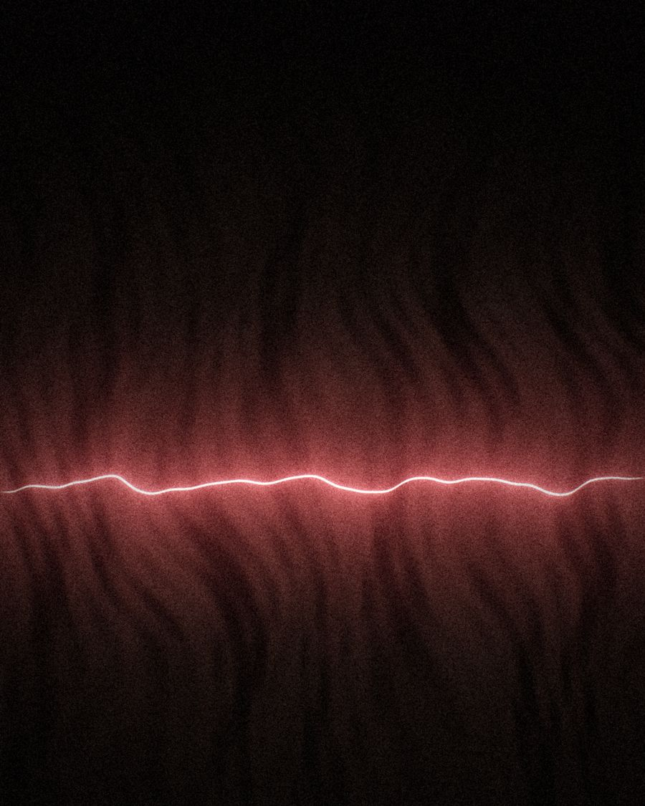
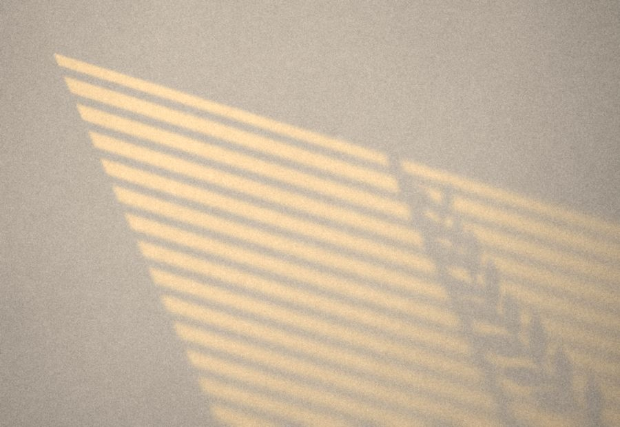
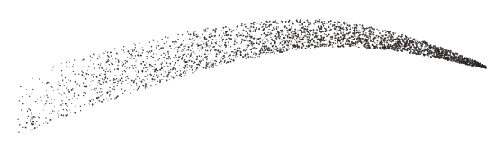
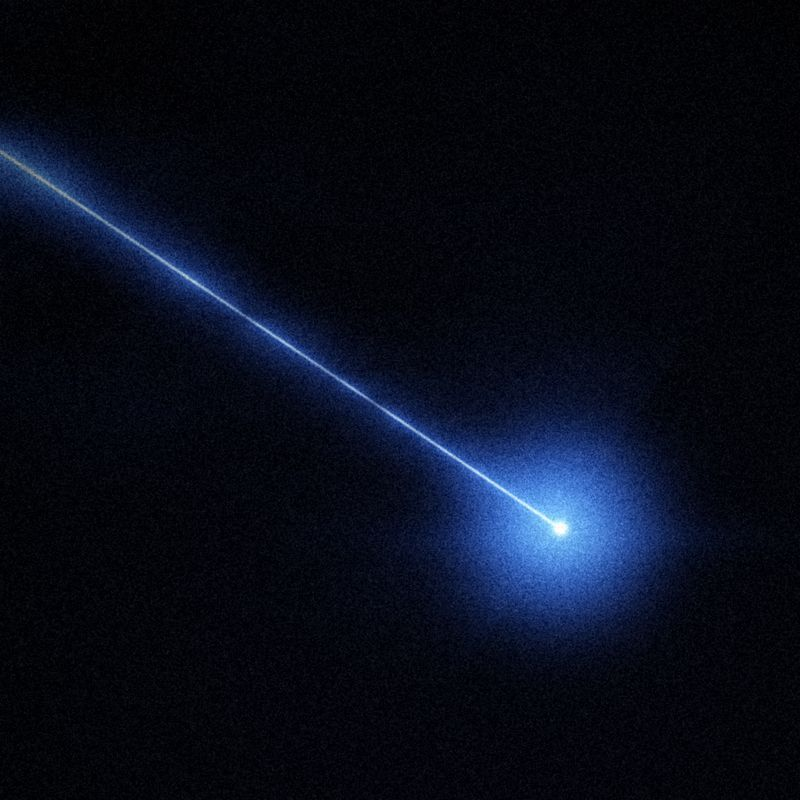

III
Microblading
Trazos finos que imitan el pelo natural, dibujados a mano con una herramienta de microagujas. Sirve para rellenar huecos y definir la forma con un acabado natural.
Centro de estética en Huelva
Depilación láser de diodo y cejas dibujadas pelo a pelo, en pleno centro de Huelva.
4,9 90 reseñas en Google
Teléfono y cita: 617 71 30 30


La casa
En el número 18 de la Calle Rábida, Rosa Montero atiende una cabina de estética dedicada a pocas cosas: el láser de diodo, el dibujo de las cejas y el láser azul.
Quienes pasan por aquí lo resumen en cuatro palabras que se repiten en sus reseñas: profesionalidad, higiene, alegría y resultados. También hablan de un trato atento y cercano, y de las ganas de volver.
Para consultar un tratamiento o pedir cita, lo más rápido es llamar al 617 71 30 30.
«Para anestesiarte, te trae una Estrella Galicia.»
I
La luz del diodo atraviesa la piel y la absorbe el pigmento del vello, la melanina.
Esa energía se convierte en calor dentro del folículo y lo va debilitando de una sesión a otra. La piel que lo rodea absorbe mucho menos, por eso el láser trabaja sobre el pelo y respeta la superficie.
El número de sesiones depende de la zona, del tipo de vello y de cada piel. Llámanos y te contamos qué esperar en tu caso.
Consultar el láser · 617 71 30 30«Estoy muy contenta con los resultados del láser. Desde el primer momento he notado que funciona muy bien y el trato ha sido excelente.»
II
Antes de dibujar una ceja, se mide la cara.
Desde el ala de la nariz salen tres líneas. La que pasa por el lagrimal marca dónde empieza la ceja. La que roza el borde exterior del iris señala el punto más alto del arco. La que llega al rabillo del ojo dice dónde debe terminar.
Con esas medidas y tus rasgos se decide el grosor, la altura y la forma. Es el punto de partida del microblading y del microshading, y también sirve para diseñar la ceja cuando solo quieres darle forma.

III
Trazos finos que imitan el pelo natural, dibujados a mano con una herramienta de microagujas. Sirve para rellenar huecos y definir la forma con un acabado natural.

IV
El pigmento se deposita punto a punto hasta crear una sombra suave, parecida a una ceja maquillada con polvo. Más ligera en el inicio y más marcada hacia la cola.

V
La otra luz de la cabina.
Además del diodo, en el centro trabajamos con láser azul. Cada piel es distinta, así que preferimos explicártelo en persona: para qué se usa, cómo es una sesión y si encaja con lo que buscas.
Preguntar por el láser azul«Profesionalidad, higiene, alegría y resultados. Encantada con Rosa. Quién diría que se hace una el láser mientras se toma una cerveza y unas banderillas.»
Visítanos
21001 Huelva
| Lunes a viernes | 10:00–14:00 16:30–20:00 |
|---|---|
| Sábado | 10:00–13:30 |
| Domingo | Cerrado |